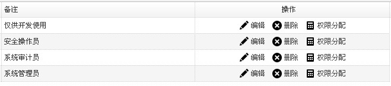
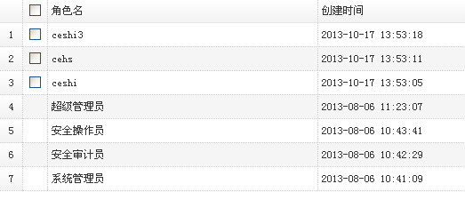

$.window接口会自动生成一个弹框，并且使用异步方式提交表单，返回相关处理信息。开发者无需关注提交动作，当然需要在form表单中指定action=”your url”提交地址，提交后返回一个{ret:”1”,errcode:”1”,msg:”添加用户失败”}json字符串格式，$.window根据json格式自动解析处理。 效果图：
1. 资源文件的引入
资源文件由平台同意提供resources资源包，子系统在使用时将相应的资源文件引入即可。依赖的公用资源文件脚本如下：
<link rel="stylesheet" type="text/css" href="${base}/resources/css/main.css">
<link rel="stylesheet" type="text/css" href="${base}/resources/css/icons.css">
<script type="text/javascript" src="${base}/resources/js/jquery-1.7.2.min.js"></script>
<script type="text/javascript" src="${base}/resources/js/jquery.easyui.min.js"></script>
<script type="text/javascript" src="${base}/resources/js/jquery.easyui-ext.js"></script>
main.css 主要样式文件，包含easyui样式定义，以及自定义样式 icons.css 图标样式文件 jquery-1.7.2.min.js jquery脚本文件 jquery.easyui.min.js easyui脚本文件 jquery.easyui-ext.js easyui自定义扩展文件 tips:
- 以上脚本文件为公用的脚本文件，可以定义为一个layout宏（模板），避免了在每一个页面重复引用的麻烦，参考_common.html文件。
在页面中我们可以直接通过引入宏来引入依赖的资源文件了。使用方式（以Freemarker为示例）：<#include "/plugins/common/_common.html"/><@common>your content</@common>- 所有路径建议使用绝对路径方式，防止因为路径引发问题，如可在全局的config中配置new ContextPathHandler(“base”) 这样在页面中直接使用${base}/role/add方式引用即可。
2. 创建grid表格
grid表格为常用的展示数据信息表格，grid提供了方便易用的分页排序和拖动操作，开发者无需过多关心页面显示样式，把主要关注点放在数据渲染上。示例：
<table id="dg" class="easyui-datagrid" title="角色列表"
data-options="url:'${base}/role/data_render',toolbar:'#tb'">
<thead>
<tr>
<th data-options="checkbox:true"></th>
<th data-options="field:'name',width:80,sortable:true">
角色名
</th>
<th data-options="field:'create_date',width:80,sortable:true">
创建时间
</th>
<th data-options="field:'remark',width:100">
备注
</th>
<th data-options="field:'id',align:'center',width:100,formatter:op">
操作
</th>
</tr>
</thead>
</table>
以上是一个普通的table表格，需要我们定义好显示的头th（列名），在每个列中通过field指明对应的数据字段名称（和数据库字段名对应），如果想要支持easyui提供的效果，需要指明class="easyui-datagrid"(必须)，然后我们需要配置一个url，来请求后台的数据来对表格信息进行渲染，可以直接在table中使用url="/role/data" ,也可以在data-options中配置（如上）。这样一个数据表格就显示出来了。更多api，参考easyui文档表格部分。
3. 增加操作项toolbar
每个列表上经常会带有一些操作按钮以及查询条件，也就是toolbar，给列表添加一个toolbar也很简单，只需要在table上面定义一个div,如下：
<div id="tb">
<div class="toolbar">
<a href="javascript:void(0)" onclick="add()" class="easyui-linkbutton"
data-options="iconCls:'icon-plus',plain:true">添加角色</a> |
<a href="javascript:void(0)" onclick="deletes()"
class="easyui-linkbutton"
data-options="iconCls:'icon-cancel',plain:true">批量删除</a> |
角色名：
<input type="text" value="" id="name" class="input-text"
onkeydown="query()" />
<a href="javascript:void(0)" class="easyui-linkbutton" onclick="query()"
data-options="iconCls:'icon-zoom'">查询</a>
</div>
</div>
在table中需要关联我们创建的toolbar, table中的data-options中添加toolbar:'#tb'。这样一个带有toolbar的表格就完成了。多行toolbar，可以定义多个div形式，如<div class=”toolbar”></div><div class=”toolbar”></div>。
4. form表单
form表单为普通的表单格式，如下：
<form id="ff" class="form" method="post" action="${base}/account/save">
<div id="p" class="easyui-panel" title="账号添加"
data-options="iconCls:'icon-plus'">
<table class="table_form" width="100%">
<tr>
<td align="right">
账号:
</td>
<td>
<input class="easyui-validatebox span3" type="text"
name="account.nam value="" />
</td>
</tr>
<tr>
<td></td>
<td>
<a href="javascript:void(0)" onclick="add()"
class="easyui-linkbutton">保 存</a>
<a href="javascript:void(0)" onclick="add_batch()"
class="easyui-linkbutton">保存并继续</a>
<a href="javascript:void(0)" onclick="reback()"
class="easyui-linkbutton">取 消</a>
</td>
</tr>
</table>
</div>
</form>
需要指定action提交的url(也可以通过在form_submit(options)中指定url:'${base}/account/save')，提交方法默认使用post ,点击保存后调用方法$.form_submit(options)，returl为保存成功后转向的页面，如果没有指明该参数，保存后继续停留在当前页。
接口： $.form_submit(options) options为参数对象
属性：
扩展自easyui $.fn.form.defaults，除了可以使用easyui的form参数外（参考easyui 表单部分），还增加了自定义参数returl：提交完成后转向的页面form：指定需要提交的表单（为防止一个页面有多个form冲突），默认提交当前页所有form
实例方法，保存和保存并继续两个方法调用如下：
function add(){
$.form_submit({
returl:"${base}/account",
form:"#win" //指定只提交id为win的form表单
});
}
function add_batch(){
$.form_submit();//无参数
}
5. 表单验证
表单验证需要在输入框中添加class="easyui-validatebox"这样input就具备了验证功能，在输入框中指定对应的验证方法就能实现相应的验证功能了。比如非空验证：
<input class="easyui-validatebox" type="text" data-options="required:true" value="" />
Easyui提供一些基础性的验证：
扩展：
验证也可以采用组合验证方式，一个复杂些的组合验证例子：
<input class="easyui-validatebox span3" type="text" name="role.name"
data-options="required:true,validType:['remote[\'${base}/role/has_role\',\'name\',\'角色名已存在\']','safefilter','length[1,20]']"
value="${(role.name)!}" />
6. 弹框调用
(1) 添加/编辑弹窗
接口：$.window(options) options为属性对象
属性：
继承自easyui $.fn.dialog.defaults,相关属性可参考easyui的dialog部分，扩展属性：
`title`:弹窗显示名称
`href`:表单地址
`returl`:表单提交完成后返回的url，不指定默认返回当前父页面
`form`:指定弹框中需要提交的表单
`hasbutton` 默认弹框按钮是否显示（为true时不显示按钮）
使用方法：
function add(){
$.window({
title:"新建角色",
href:"${base}/role/add"
});
}
$.window接口会自动生成一个弹框，并且使用异步方式提交表单，返回相关处理信息。开发者无需关注提交动作，当然需要在form表单中指定action=”your url”提交地址，提交后返回一个{ret:”1”,errcode:”1”,msg:”添加用户失败”}json字符串格式，$.window根据json格式自动解析处理。 效果图：
注：如果不想使用默认提供的按钮，可以通过传递属性button自定义显示按钮和操作，参照easyui dialog部分。
(2) 数据选择弹窗
接口：$.showDialog(options) 用于处理需要选择公用页面数据的情况，支持单条记录和多条记录的选择。
属性：tilte:弹窗显示名称href:公用页面地址height:弹框高度（非必需）width：弹框宽度(非必需)handler:回调函数
使用方法：
function select_user(){
$.showDialog({
title:"选择用户",
height:400,
width:600,
href:"${base}/user/single",
handler:function(data){//data为选择表格行的数据
var textFiled = data.name;
var idFiled = data.id;
$("#user_name").val(textFiled);//赋值给对应文本框显示用
$("#user_id").val(idFiled);//赋值给隐藏域保存使用
}
});
}
效果图：
注：为避免冲突，提供公共页面api者，需指定公共页面table的id为common-grid
7. 删除与批量删除
接口：$.deletes(options)
属性：
title : 提示框标题
info : 提示信息
href : 请求地址
params : 参数
returl : 删除后返回地址
handler:删除后回调方法
grid:执行操作的表格（解决多表格下冲突，单个表格下无需指定）
使用方法：
//批量删除
function deletes(){
$.deletes({
href:"${base}/role/delete?ids=" //注：此处没有传递params，默认根据表格中的checkbox获取选择的数据
});
}
//单个删除
function deleteById(value){
$.deletes({
href:"${base}/role/delete",
params:"id="+value //此处params也可不指定，直接附加到url后面
});
}
8. 查询
接口：$.query(options)
属性： form 定义的form表单名称
使用方法：
function query(){
var param = $.query({
form:'#search_form'
});
$("#dg").datagrid('load',param);
}
注：使用该方法需要把查询条件通过form表单包裹起来，参数值form指定的即为当前form表单的id。
如果查询字段较少（1-2个），可以直接使用对应参数做查询，如：
function query(){
$("#dg").datagrid('load',{
name:$("#name").val()
});
}
9. 其他接口
表格显示操作按钮，在实际使用中经常会用到在表格列中指定操作按钮的情形，针对这种情形，可以在定义表格列时，使用formatter接口。
<th data-options="field:'id',align:'center',width:100,formatter:op">
操作
</th>
formatter对应的为一个function(value,row)方法。value为当前行的id，row为行对象(参考easyui 表格部分)。比如在表格行我们添加上编辑和删除按钮，可以使用linkbtn接口。
linkbtn接口属性：value:当前行idoption:操作项，为一个对象数组，里面包含多个操作项的配置
使用方法：
function op(value,row){
return linkbtn(value,{
option:[{
text:'编辑', //操作显示文字
icon:'icon-edit',//图标
onclick:'edit' //点击调用的方法，对应着方法function edit(id){}
},{
text:'删除',
icon:'icon-cancel',
onclick:'deleteById'
},{
text:'权限分配',
icon:'icon-calc',
onclick:'perms_distri'
}]
});
}
效果：

接口：$.queryMore(options)
属性：href:查询form页面height:高度width:宽度handler：回调函数，返回值data为查询条件
使用方法：
function query_more(){
$.queryMore({
href:'${base}/plugins/host/_query.html',
height:130,
handler:function(data){
$("#dg").datagrid('load',data);//根据条件reload表格
}
});
}
_query.html页面的input 需要指定class="query"否则无法获取查询条件
在表格显示时经常会遇到内容太多，无法全部显示的情况，此时可通过tips提示方式提供有好的预览。
接口：tooltip 默认表格中超过10个字符的全部使用 ，可通过配置[‘字段名’]来指定特殊字段使用
使用方法：
$(function(){
$("#dg").datagrid({
onLoadSuccess:function(){
$(this).datagrid('tooltip',['log']);
}
});
});
效果：
接口：hideCheckbox 隐藏指定列的checkboxdisabledCheckbox禁用指定列的checkbox
用法：
$("#grid").datagrid('hideCheckbox',index);//index为行标
效果：

该控件为扩展my97datapicker的控件，easyui默认日期控件体验不太友好。
接口：$("#id").my97()
属性：参考my97属性
使用方法：
1.class注册：
<input id="beg_date" name="beg_date" type="text" class="easyui-my97"
data-options="dateFmt:'yyyy-MM-dd'"/>
2.js注册：
$('#dd').my97({});
上传组件依赖于第三方组件swfupload。因此在使用前需要引入相应的资源文件
<script type="text/javascript"
src="${base}/resources/plugins/swfupload/swfupload.js"></script>
<script type="text/javascript"
src="${base}/resources/plugins/swfupload/handler.js"></script>
<script type="text/javascript"
src="${base}/resources/plugins/swfupload/common.js"></script>
属性：
url:上传后台地址
size:限定上传文件大小，默认200m 如：size:"200M"
file_type：指定上传文件类型。如："*.exe;*.zip"
file_upload_limit：限定上传文件个数，默认50
使用方法(结合easyui,统一样式)：
<script type="text/javascript">
var base = '${base}';
$(function(){
$.upload({
url:base + "/product_group/excute_import",
size:"50MB",
file_type:"*.xml",
file_upload_limit:1
});
})
</script>
<div id="tb_safe_auth">
<div class="toolbar" style="clear: both">
<span id="imgBtn"></span>
<div style="position: absolute; top: 6px;left:65px">
|<a href="javascript:void(0);" onclick="upload();"
class="easyui-linkbutton"
data-options="iconCls:'icon-up',plain:true">上传</a>
</div>
</div>
</div>
<table id="datagrid" class="easyui-datagrid" data-options="autoRowHeight:true,nowrap:false">
<thead>
<tr>
<th data-options="field:'name',width:60">
文件名
</th>
<th data-options="field:'size',width:40">
文件大小
</th>
<th data-options="field:'type',width:40,align:'center'">
文件类型
</th>
<th data-options="field:'pro',width:60,align:'center'">
进度
</th>
<th data-options="field:'state',width:80">
状态
</th>
</tr>
</thead>
</table>
效果：

更多使用方法请参考easyui文档，本文档主要针对扩展方法做使用介绍